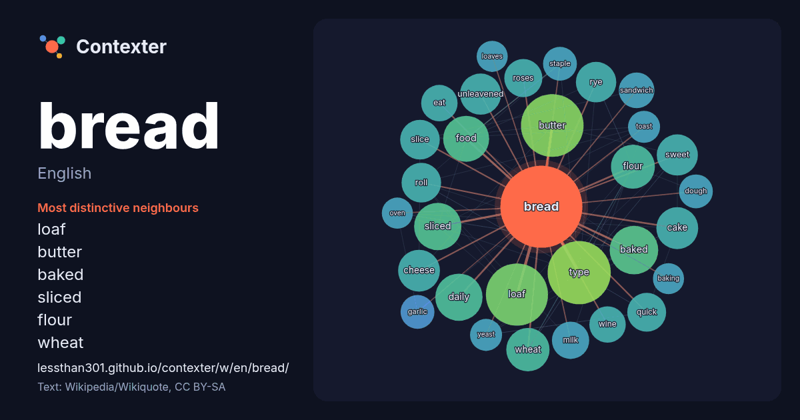

English · word of the day list
bread
The words found around it in 1687 instances from English Wikipedia, Wikiquote and Hacker News.

Most distinctive neighbours
- loaf 64×
- butter 63×
- baked 39×
- sliced 38×
- flour 31×
- wheat 29×
- unleavened 29×
- cake 28×
- cheese 28×
- rye 27×
- type 27×
- slice 26×
- sweet 25×
- daily 24×
- roses 24×
- quick 23×
- roll 22×
- sandwich 21×
- milk 21×
- eat 20×
× = how many times more often than in general English Wikipedia text.
Most frequent neighbours
- type 66
- butter 65
- loaf 64
- white 45
- baked 39
- daily 37
- sliced 37
- food 35
- flour 32
- wheat 31
- cake 29
- cheese 29
- sweet 28
- unleavened 28
- give 27
- rye 27
- french 26
- roll 26
- slice 26
- traditional 26
In context
- Bread is a baked food product made from water, flour, and often yeast. It is a staple food across the world, particularly in Europe and the Middle East Wikipedia snippets · Bread
- Bread was an American soft rock band from Los Angeles, California. They had 13 songs chart on the Billboard Hot 100 between 1970 and 1977. The band was Wikipedia snippets · Bread (band)
- Look up bread and butter or bread-and-butter in Wiktionary, the free dictionary. Bread and butter may refer to: Bread, paired with butter, a staple of Wikipedia snippets · Bread and butter
- bread in Wiktionary, the free dictionary. Bread is a group of staple foods. Bread may also refer to: Bread (1918 film), an American silent film Bread Wikipedia snippets · Bread (disambiguation)
- Rye bread is a type of bread made with various proportions of flour from rye grain. It can be light or dark in color, depending on the type of flour used Wikipedia snippets · Rye bread
- Bread pudding is a dessert, that originated in Britain, that is made with stale bread and milk, cream or water. It generally also contains eggs, a form Wikipedia snippets · Bread pudding
- disciples bread and wine. Passages in the New Testament state that he commanded them to "do this in memory of me" while referring to the bread as "my body" Wikipedia snippets · Eucharist
- Sliced bread is a loaf of bread, sliced with a machine and packaged for convenience, as opposed to the consumer cutting it with a knife. It was first sold Wikipedia snippets · Sliced bread
More English words
- art
- autumn
- bell
- bridge
- cat
- city
- climate
- clock
- death
- desert
- dog
- family
- food
- forest
- garden
- god
- gold
- health
- heart
- history
- honey
- horse
- island
- language
- life
- map
- mirror
- money
- mother
- mountain
- nature
- power
- rain
- road
- salt
- science
- shadow
- silence
- song
- star
- storm
- summer
- tea
- time
- train
- truth
- water
- winter
- work
Precomputed on 2026-10-09 with default settings (±5 words, medium corpus). The interactive map can refresh it with live data.